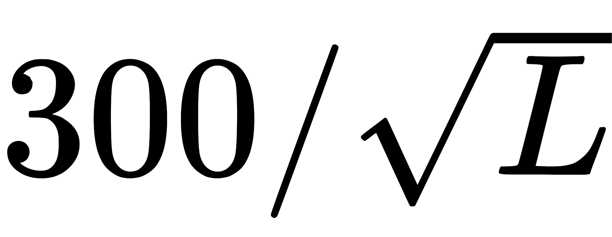

射质因数Q(L)，L为水中非限定线性能量转移，当L小于10时，Q为1；当10<L<=100时为0.32L-2.2;当 L≥100时，Q为
等价剂量等于吸收剂量乘上辐射加权因数的值
各类辐射加权因数(1)
辐射种类与能量区间(2) 辐射加权因数WR
所有能量之光子 1
所有能量之电子及μ介子(3) 1
中子(4)能量<10 千电子伏(keV) 5
10 千电子伏(keV)─100 千电子伏(keV) 10
>100 千电子伏(keV)─2 百万电子伏(MeV) 20
>2 百万电子伏(MeV)─20 百万电子伏(MeV) 10
>20 百万电子伏(MeV) 5
质子(回跳质子除外)能量>2 百万电子伏(MeV) 5
α粒子，分裂碎片，重核 20

| 辐射类型 | 辐射权重因子 |
| X 射线、 γ 射线、 β 射线 | 1 |
| 能量小于 10 keV 的中子 | 5 |
| 能量为 10 - 100 keV 的中子 | 10 |
| 能量为 100 - 2000 keV 的中子 | 20 |
| 能量为 2 - 20 MeV 的中子 | 10 |
| 能量大于 20 MeV 的中子 | 5 |
| α 粒子及重核 | 20 |
除了维基镜像外，我另外提供了两个更清晰的版本↑